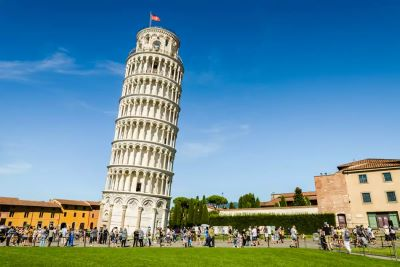
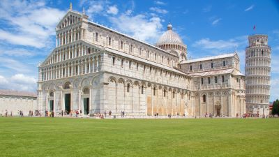
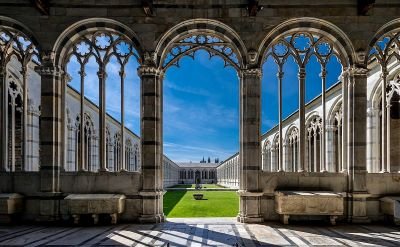

Descubre la Belleza de la Torre de Pisa
¡Te invitamos a explorar la majestuosidad y el encanto de la icónica Torre de Pisa en Italia! En Travel Partners Agency, nos complace ofrecerte una experiencia inolvidable en este destino único, donde la historia, la arquitectura y la belleza se combinan para crear una experiencia verdaderamente memorable.
Atractivos Turísticos
-

Torre de Pisa
El símbolo más reconocible de la ciudad, la Torre de Pisa es famosa en todo el mundo por su inclinación distintiva. Sube los 294 escalones hasta la cima para disfrutar de impresionantes vistas panorámicas de la ciudad y la campiña toscana circundante.
-

Piazza dei Miracoli (Plaza de los Milagros)
Esta plaza es el hogar de la Torre de Pisa, así como de otros magníficos edificios medievales, incluida la Catedral de Pisa (Duomo di Pisa) y el Baptisterio de San Juan (Battistero di San Giovanni), ambos ejemplos impresionantes de arquitectura románica.
-

Campo Santo Monumental
Conocido como el Cementerio Monumental, este sitio histórico alberga una colección única de sarcófagos, tumbas y frescos que datan de la Edad Media. Es un lugar tranquilo y sereno para reflexionar sobre la historia y la cultura de la región.
Itinerario de 5 días y 4 noches
-
Día 1: Llegada a Pisa
-
1. Llegada al aeropuerto internacional de Pisa y traslado al hotel.
-
2. Tarde libre para descansar y explorar los alrededores del hotel.
-
-
Día 2: Exploración de la Piazza dei Miracoli
-
1. Mañana de visita a la Piazza dei Miracoli para admirar la Torre de Pisa, la Catedral y el Baptisterio.
-
2. Tarde libre para disfrutar de la gastronomía local y pasear por las pintorescas calles de Pisa.
-
-
Día 3: Ascenso a la Torre de Pisa
-
1. Mañana dedicada a subir los escalones de la Torre de Pisa y disfrutar de las vistas panorámicas desde la cima.
-
2. Tarde de visita al Campo Santo Monumental para explorar su fascinante colección de arte funerario.
-
-
Día 4: Excursión a Florencia
-
1. Excursión de día completo a la cercana ciudad de Florencia, famosa por su rica historia y su impresionante patrimonio artístico.
-
2. Visita a lugares emblemáticos como la Galería Uffizi, el Ponte Vecchio y la Piazza della Signoria.
-
-
Día 5: Despedida de Pisa
-
1. Mañana libre para compras de último momento o actividades opcionales.
-
2. Traslado al aeropuerto para el vuelo de regreso.
-
Costos del Viaje
El costo del viaje puede variar dependiendo de las preferencias individuales y las opciones de alojamiento seleccionadas. Nuestro paquete básico de 5 días y 4 noches incluye:
-
1. Traslados desde y hacia el aeropuerto.
-
2. Alojamiento en hoteles de calidad en el centro de Pisa.
-
3. Excursiones mencionadas en el itinerario.
-
4. Guías locales expertos.
Para obtener un presupuesto personalizado y más detalles sobre opciones de alojamiento, actividades adicionales y servicios complementarios, no dudes en contactarnos. Estamos aquí para hacer de tu viaje a la Torre de Pisa una experiencia inolvidable. ¡Reserva tu aventura hoy con Travel Partners Agency!